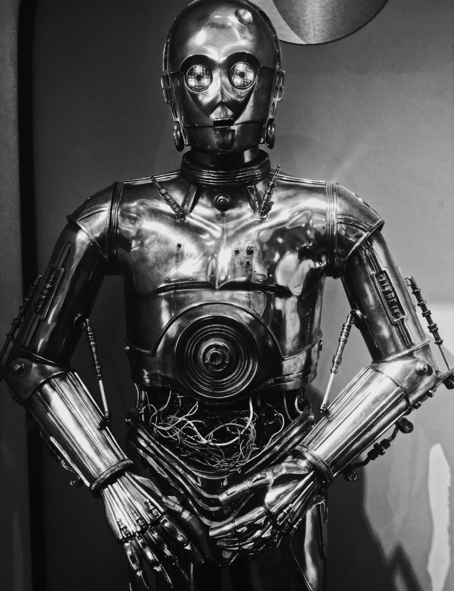

The Rise of 80s Pop Culture
Author: Alessio Pasquesi
Published Date: October 13, 2024
80s movies were a big deal in America and made people feel something special. They were full of action and excitement like in movies like Top Gun or Indiana Jones, where the heroes seemed invisible. It gave people a feeling of adventure and confidence even if you didn't like action. Movies like The Breakfast Club and Ferris Bueller’s Day Off connected with younger audiences because they felt extremely relatable. It was like these movies understood what it was like to be a teenager and could take out the thoughts that were in the back of their head. 80’s movies brought a powerful amount of energy and always had a strong message. 80s music was all about fun and positive vibes. 80s pop music was full of catchy songs that got people excited, like Michael Jackson’s Thriller or Genesis’s Invisible Touch. These songs made people want to dance and just let loose. Rock bands like Metallica and Guns N' Roses gave people an outlet to feel rebellious and free. It was also a time when new genres like hip-hop and electronic music were starting to become more popular in music , which made people feel like something fresh and exciting was happening. 80s music was energetic and gave people a way to escape and enjoy life.
